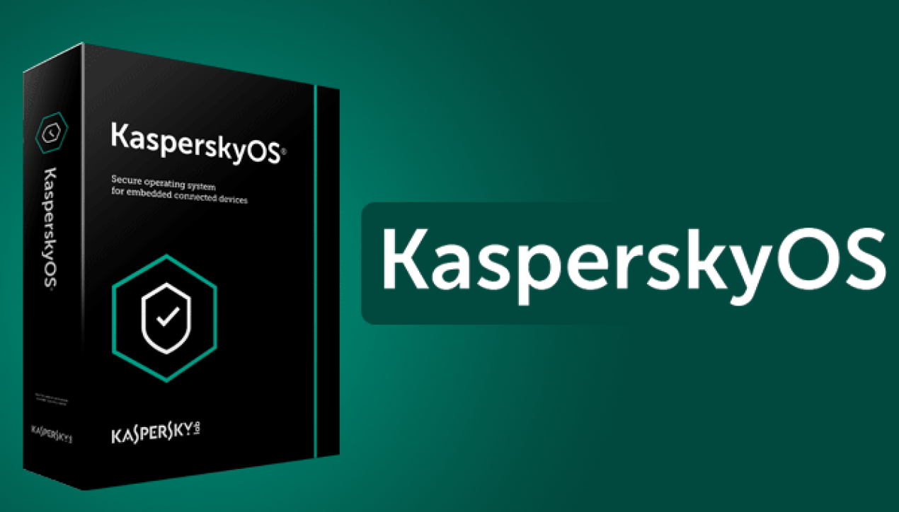
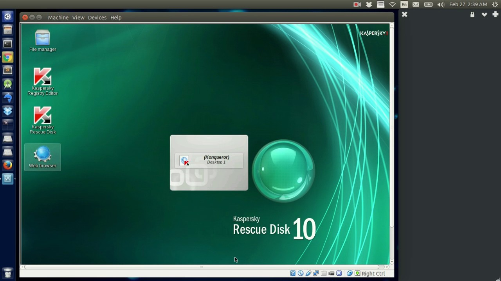

Kasperski OS
 Kaspersky OS - это операционная система, разработанная компанией Kaspersky Lab с упором на безопасность. Она была создана для использования в критических системах, таких как инфраструктура критически важных объектов, банковские системы и промышленные управляющие системы.
 Одной из главных особенностей Kaspersky OS является ее микроядерная архитектура. В отличие от монолитных ядерных операционных систем, микроядерная архитектура позволяет разделить ядро операционной системы на отдельные компоненты и запускать их в отдельных защищенных контейнерах. Это повышает безопасность и стабильность операционной системы, так как ошибки в одном компоненте не приведут к падению всей системы.
Другой важной особенностью Kaspersky OS является ее возможность проверять целостность файлов и приложений в режиме реального времени. Это достигается за счет использования технологии Trusted Execution Environment (TEE), которая позволяет создавать защищенные области памяти для запуска приложений и проверять их на наличие изменений до запуска.
Kaspersky OS также имеет механизмы защиты от атак с использованием буферного переполнения, а также защиту от атак методом переполнения стека. Она также поддерживает многоуровневую защиту, которая позволяет разделить систему на несколько уровней доступа и управлять ими.
Несмотря на то, что Kaspersky OS была создана для использования в критических системах, она также может использоваться в других областях, где требуется повышенный уровень безопасности. Kaspersky OS является коммерческим продуктом и доступна для приобретения у Kaspersky Lab.
Kasperski OS
Kasperski OS интервью
Другие технологии лаборатории Касперского